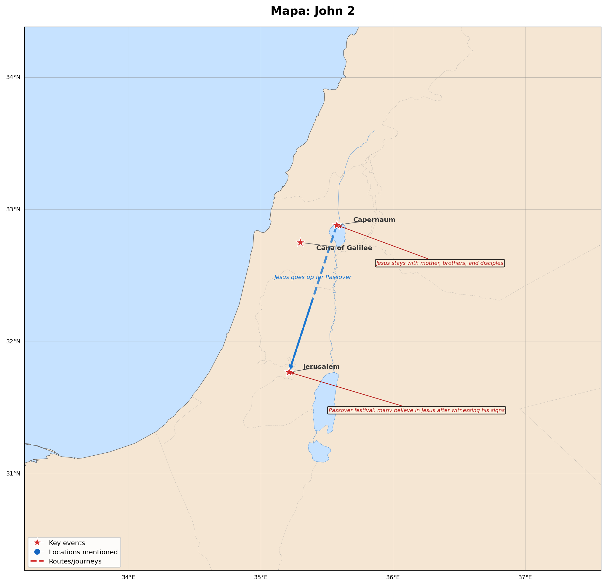

John 2
Estudio interactivo · MorphGNT
25
Versículos
375
Patrística
40
Refs. Cruzadas
4
Lugares
🗺️ Mapa Geográfico

Click para ampliar
📖 Texto
📊 Padres
🔗 Referencias Cruzadas
📅 Eventos
🗺️ Manuscritos — Mapa y Línea de Tiempo
×